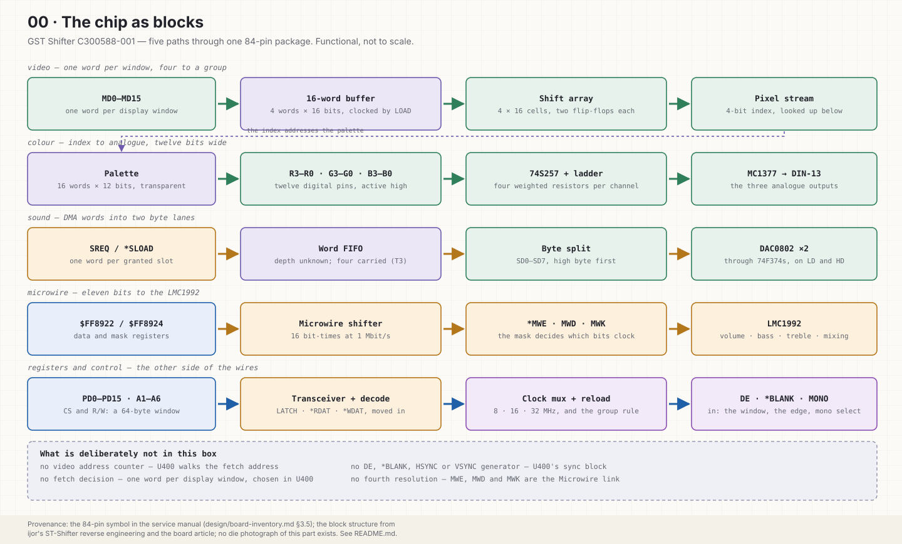
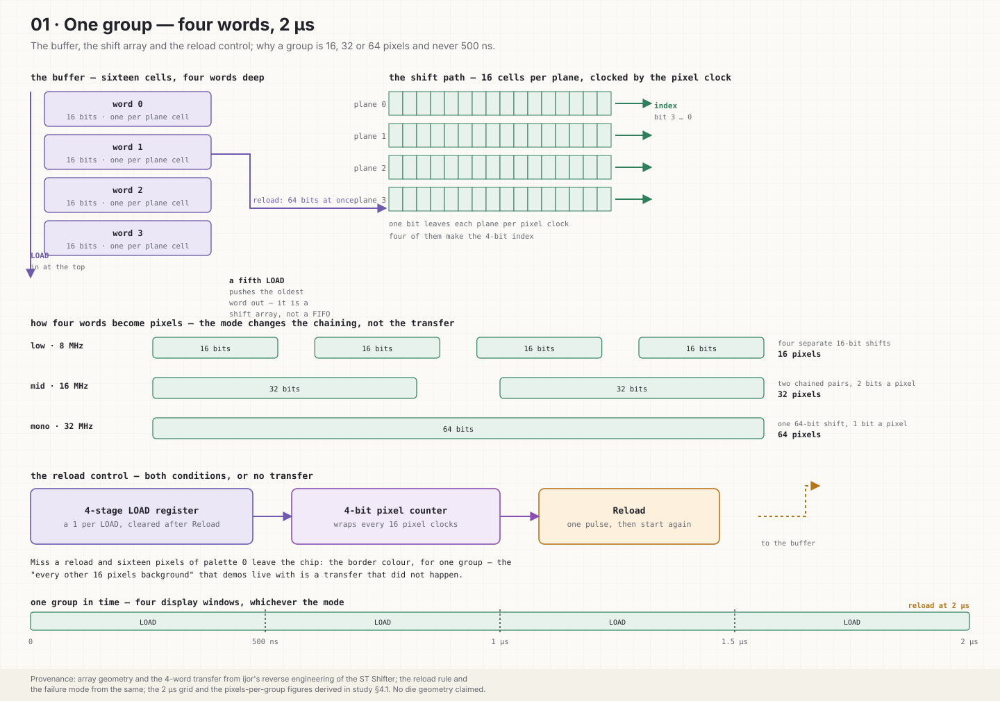
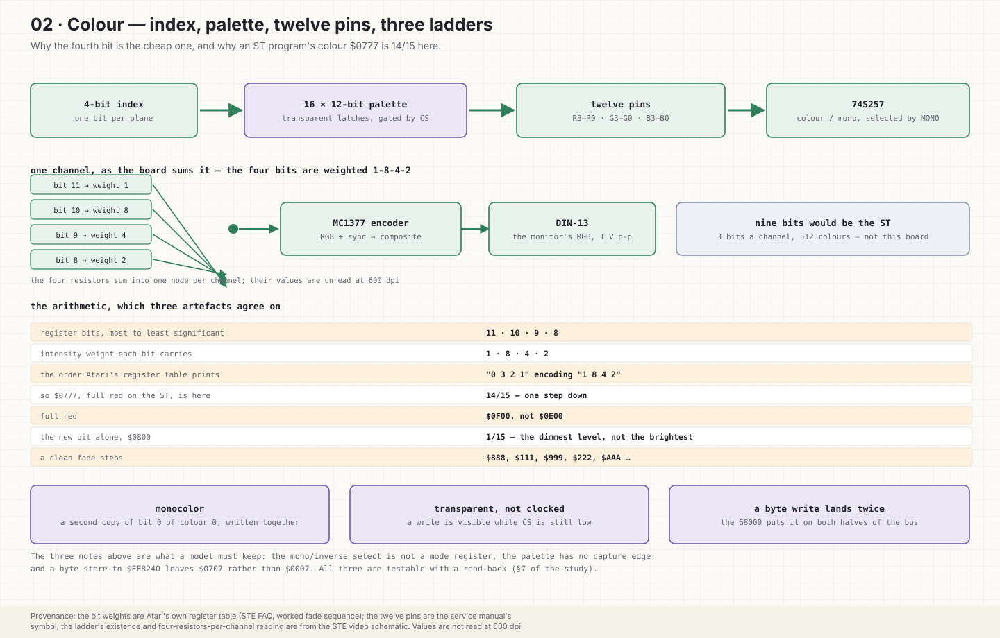
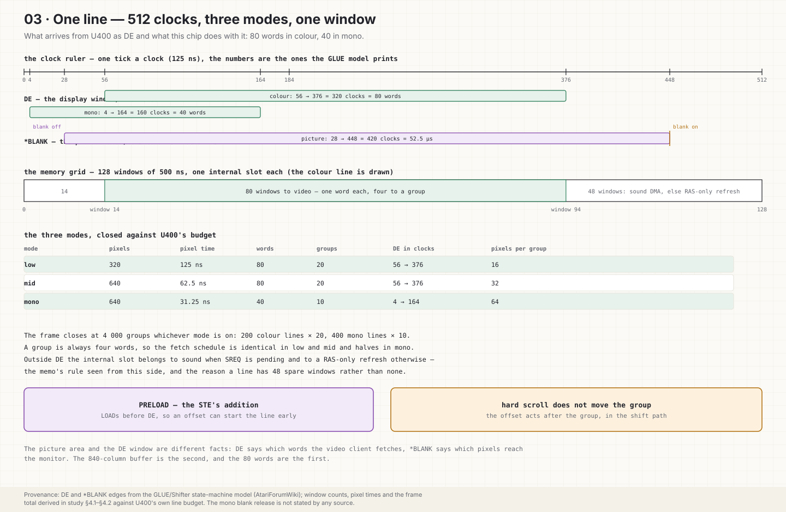

C300588-001, the STE's video chip: the blocks, one group, the colour path, one line, and the registers it shares with U400.
Educational schematics, drawn from the service manual's pin symbol, ijor's reverse engineering of the
earlier ST Shifter, Atari's register tables and the board article. Functional, not to scale, and
not a floorplan — this part has no die photograph, so no layout is claimed anywhere.
The study behind them is research/gst-shifter-implementation.md.
00 · The chip as blocks
Five paths through one 84-pin package, and what is deliberately not in it. Start here.

01 · One group — four words, 2 µs
The sixteen-word buffer, the 64-bit shift path, the reload control, and how four words become 16, 32 or 64 pixels.

02 · Colour — index, palette, twelve pins, three ladders
The 4-bit index, sixteen 12-bit transparent latches, and the 1-8-4-2 weighting that makes $0777 14/15.

03 · One line — 512 clocks, three modes, one window
DE and *BLANK against the clock ruler, the 80 video windows of a colour line, and the 48 the other clients get.

04 · The registers and the seam
Two chips answer at $FF82xx: what is stored where, and what one Microwire transfer looks like.